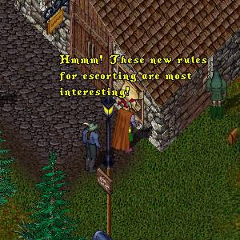
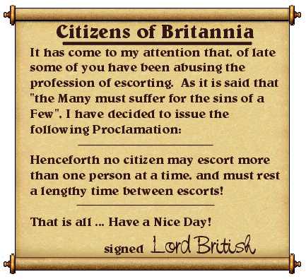
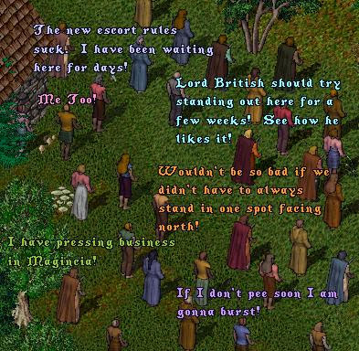
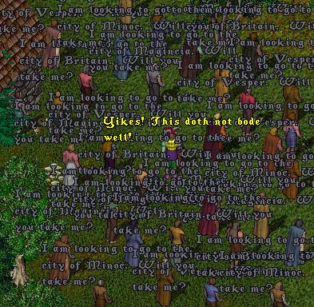
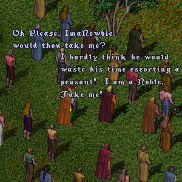
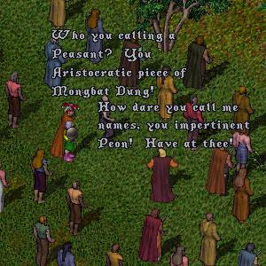
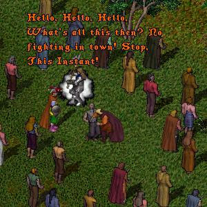
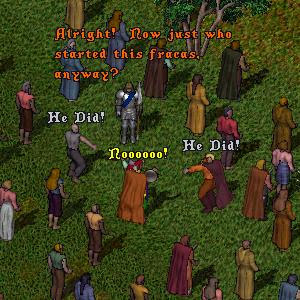
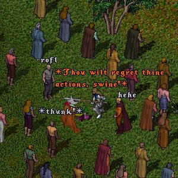
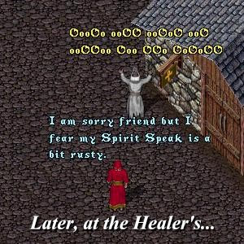

Episode 92: Never one to shy away from controversy, this week ImaNewbie investigates the new changes to "Escorting". Now for those of you that have ever been unable to see the screen for the text Spam following some greedy dood who is escorting about 20 npc's at a time, you probably welcome the changes. On the other hand, for some of you mages who have had to use all your skill points building your tank mage and have few other ways to make money, this is probably a disaster. I have said enough. Read on and catch ImaNewbie's spin on the whole issue.
As this episode opens we find ImaNewbie at the bulletin board
in Occlo, reading Lord British's latest edict.


Meanwhile at a popular "Waiting Spot" for escort services on Occlo,
the npcs are chatting about the new escorting rules.

ImaNewbie, thinking that with the new "one per escort" rule there
may actually BE someone to escort for a change, proceeds to
the waiting spot and bravely shouts out "Destination".



Hearing the brawl taking place, one of Britannia's famous
"Terminator" Guards bursts on to the scene.



This last frame is anit-climactic and totally unnecessary but I
threw it in anyway for you viewers who are not satisfied with
merely seeing Ima blindsided by a Guard's halberd, but must
also see him utter the immortal words...
